NeurIPS 2025
ICML 2026
ICML 2026
ghadinehme.com/publications
Recovering executable CAD programs from 3D meshes is fundamentally challenging due to the long-horizon, compositional nature of CAD construction and the need for precise estimation of both discrete operations and continuous parameters. Existing learning-based methods primarily treat mesh-to-CAD reconstruction as one-shot sequence prediction and are largely limited to simple sketch-extrude pipelines, restricting operation diversity and preventing the use of intermediate geometric feedback, with no mechanism for refining generated programs.
We introduce StepCAD, a generative optimization approach that performs step-by-step, geometry-conditioned program synthesis followed by explicit refinement in program space. Given an input mesh, StepCAD first predicts construction sequences using a state-conditioned CAD policy conditioned on both target and intermediate geometry, then refines them through IoU-guided tree search over local program edits. To address the limited operation diversity in prior work, we further introduce ARCADE-1.5M, a large-scale dataset of 1.5M executable CAD programs with diverse operations, long-horizon sequences up to 150+ operations, and 12.5M intermediate state-action transitions.
Experiments on multiple CAD reconstruction benchmarks show that StepCAD achieves state-of-the-art reconstruction accuracy, validity, and robustness, with up to 87.2% relative IoU improvement over the best prior method and increasingly larger gains as shape complexity increases.
StepCAD splits mesh-to-CAD into two parts. A learned policy writes the program one operation at a time and sees the geometry it has built so far. A geometry-guided search then makes local edits to that program wherever it still disagrees with the input. Everything below is drawn from one real run on a CADBench part: a stepped boss from CADBench's ABC set, also the first part in the replay above.
At each step the policy sees the target and the current shape, predicts the next CadQuery operation, and the kernel executes it.
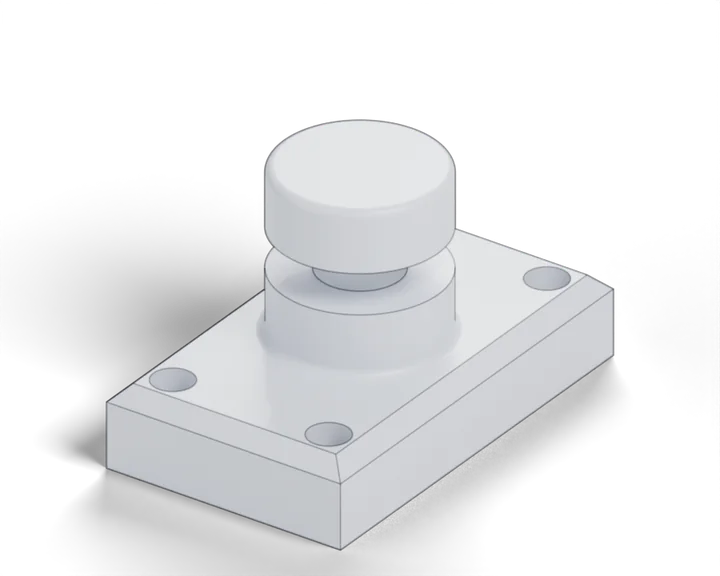
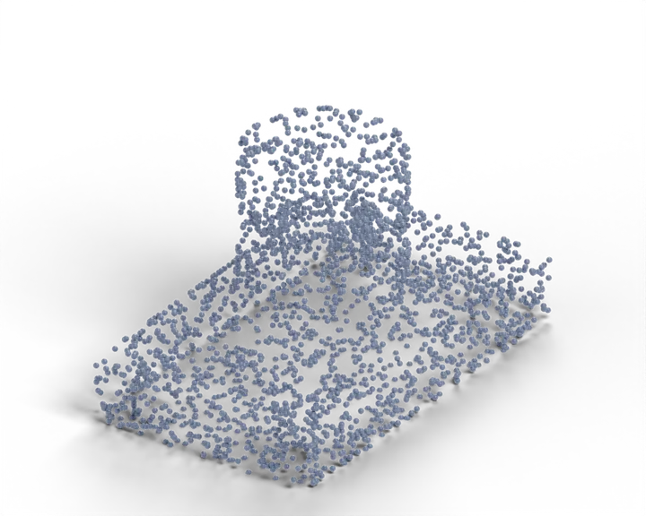
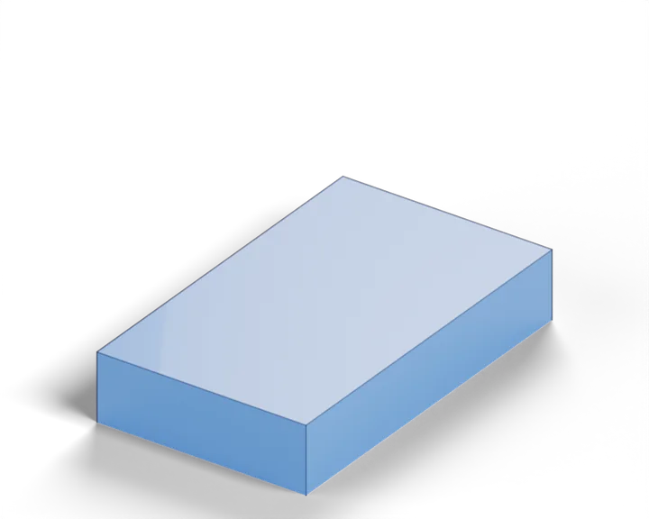
A beam search (K = 2) walks the program in order. At every operation it tries four local edits, executes each candidate, and keeps the two best by IoU.
Hover a candidate to see the edit it tried.
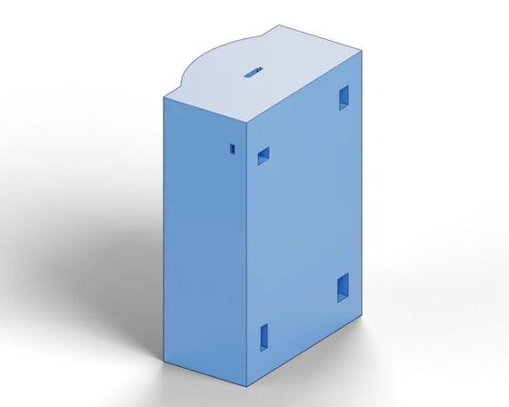
→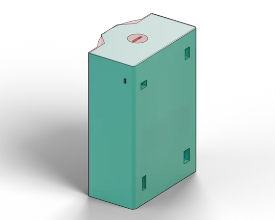
Replaces the base sketch with the profile sliced from the mesh at that plane, recovering the housing's outline.
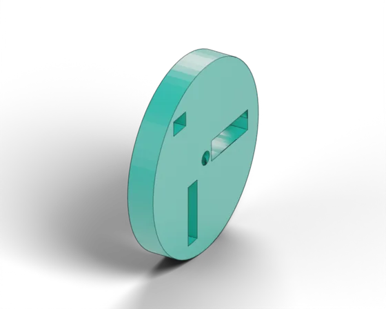
→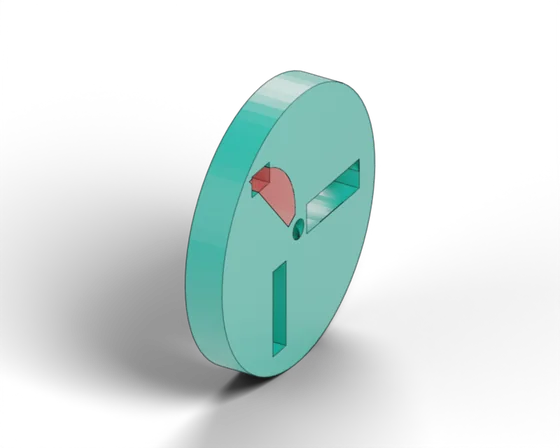
Adds a cut-extrude that removes material the program put where the mesh has none.
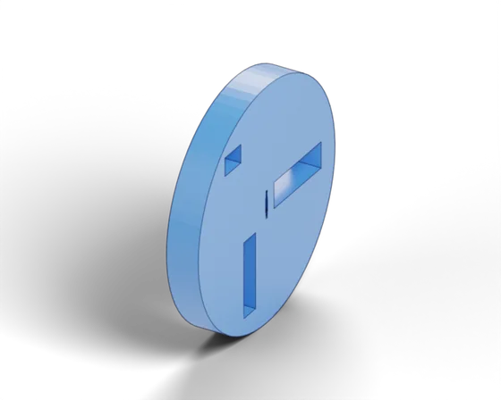
→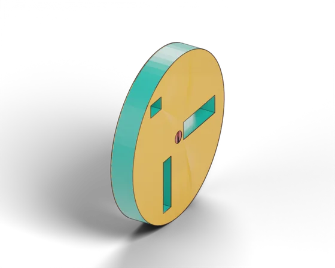
Bayesian optimisation of one operation's depths, radii and sketch dimensions.
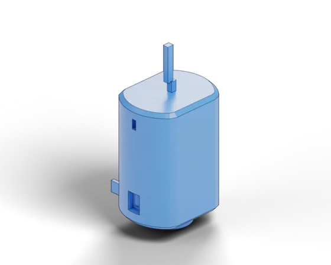
→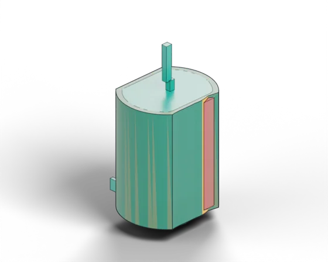
Drops an operation that hurts the fit, here a cut that took away material the motor body needs.
material added and material removed by each edit, from exact B-rep Booleans between the program before and after.
To learn operations beyond sketch-and-extrude, we built ARCADE-1.5M: 1.5M executable CadQuery programs generated by 94 workflow-inspired strategies from ABC sketch loops. Every intermediate state must be a valid single solid, every program is re-executed from scratch before export, and the geometry after each solid operation is kept. That gives 12.5M state–action pairs for training the policy.
Share of programs that contain each operation at least once.
Per-program averages across datasets.
We evaluate on CADBench, with seven splits spanning DeepCAD, Fusion 360, ABC (Easy / Medium / Hard by face count), mechanical parts (MCB) and organic shapes (Objaverse). We compare against CAD-Recode, Cadrille, CADEvolve and CADReasoner using their public checkpoints. StepCAD is best on every split, and the harder the shape, the larger the lead.
Sorted by gain. The largest jumps come on ABC Hard, ABC Medium and organic shapes.
Parts from CADBench's ABC split, from easy to hard, next to the CadQuery programs StepCAD recovers for them. Hover or tap a card to see the input.
Mean IoU in the ablation study as each component is added.
@inproceedings{nehme2026stepcad,
title={StepCAD: Mesh-to-CAD Code Generation via LLM Policy and Geometry-Guided Search},
author={Nehme, Ghadi and Ahmed, Faez},
booktitle={Advances in Neural Information Processing Systems (NeurIPS)},
year={2026}
}